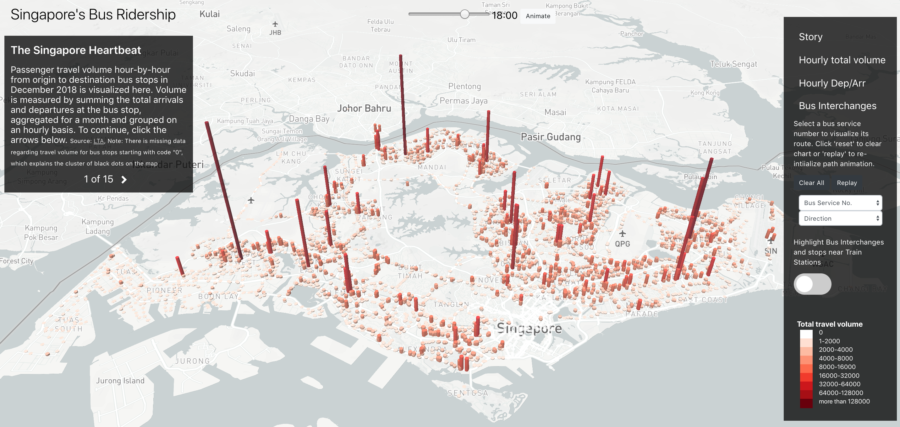

Singapore Bus Ridership
With keen interest in public transport utilization and availability of this data through Land Transport Authority's DataMall, I set out to discover Singapore's bus ridership patterns and trends with geovisualization. Mapbox GL JS support overlays like GeoJSON layers and markers. I explored this method instead of using D3 to overlay and animate. Another cool feature is the ability to extrude polygons for 3D mapping, which i used to visualize hour-to-hour travel volume.

Singapore Bus Ridership
Another version of visualizing travel volume, only including routes with more than 10000 trips made in December 2018 I clustered nodes into indiviudal network diagrams and arranged them in an aesthetically plasing manner. Links within cluster represent travel within the same district, while links across nodes represent travel across districts. The viridis colour scheme representing passenger volume against the black background really helps to make fine lines stand out.

Singapore Bus Ridership
The one-dimensional layout of nodes represents bus stops, with circular arcs representing paths between bus stops. I arranged the nodes by districts, which I felt best reveals underlying travel trends. I used d3-annotation library to nicely place labels to highlight information.


Vietnam Conflict
Animation of monthly fatalities of US Infantry within provinces. Each province is colour-coded by fatality count, with a more intense red indicating higher deaths. Data cleaning was rather challenging as names and demarcation of provinces where fatalities occured have changed after the war and it was hard to trace and assign a correct province.


Formula 1
My first time exploring D3's force layouts. d3-force's collision constraint helps to create closely-packed, non-overlapping points. The plot strips make it useful to compare laptimes between teams. I also created dropdown menus to allow viewers to choose a specific race to visualize